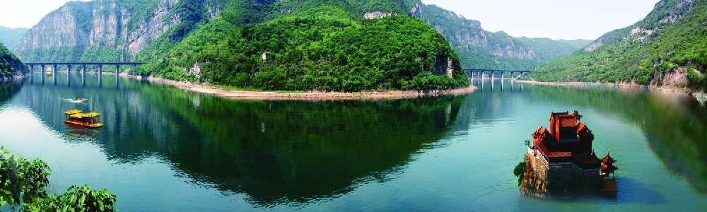
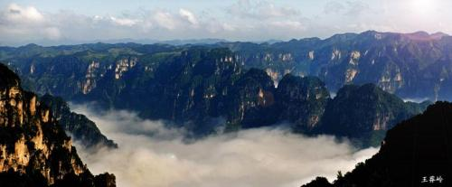

| 首页选项 | 白马风景 | 晋城风光 | 地理位置 | 历史延续 |
晋城风光
皇城相府 :
皇城相府（国家AAAA景区），皇城相府（又称午亭山村）总面积3.6万平方米，是清文渊阁大学士兼吏部尚书加三级、《康熙字典》总阅官、康熙皇帝35年经筵讲师陈廷敬的故居。其建筑依山就势，随形生变，官宅民居，鳞次栉比，是一组别具特色的明清城堡式官宅建筑群。
“绿树村边合、青山郭外斜”，皇城相府不仅是一幅古代“自然山水画”、更是一座具有强烈人文精神的东方古城堡。 皇城相府是国家AAAA-景区，皇城相府自2007年起开始创建国家5A景区，历经3年，投资2.8亿元，从旅游交通游览、旅游安全、卫生、邮电服务、旅游购物、综合管理、资源与环境保护等8个方面进行全面建设和升级，顺利通过国家级评审验收，继云冈石窟、五台山之后，成为我省第3家AAAA-景区。
国家旅游局在京为举行AAAA-景区授牌仪式，2011年2月22日皇城相府生态文化旅游区5-景区正式挂牌.皇城相府位于山西省东南部的晋城市北留镇境内，东与河南省焦作市毗 皇城相府 邻，南与古都洛阳接壤，西与山西省的临汾市、侯马市相交，北与山西省长治市紧连，目前亚洲最大的坑口火力发电站——阳城电厂近在咫尺，通讯网络覆盖全村、地理位置十分优越，晋阳高速公路擦肩而过，交通条件便利。
皇城村居住着234户，680余口人家，耕种着480亩土地，全村总面积1.7平方公里。地下有丰富的、得天独厚的煤炭资源，地上有清代康熙皇帝的老师，《康熙字典》总阅官文渊阁大学士兼吏部尚书陈廷敬故里“皇城相府”。改革开放以来，先后创办了煤炭开采，轻工、农副产品加工，旅游服务等多种产业。皇城相府2001年被山西省政府确定为新十大旅游景点之一。目前，皇城相府每日游人如织，络绎不绝。
珏山:
在晋城市区东南20公里处的丹河两岸，有一处闻名遐迩的旅游胜地，此处风光绮丽，巨嶂横列，奇峰幽谷，景色宜人。自然风光、人文景观与优美的传说故事交叠在一起，令人心旷神怡。这就是泽州县境内的珏山青莲寺风景旅游区。该旅游区由珏山景区和青莲寺景区组合而成，两景区相依相偎，上有珏山双峰揽云，下有丹河碧波荡漾。
奇山、秀水、雄刹、古观、名木、山花，构成了一幅幅美丽的自然画卷，自古被人誉为“晋魏河山第一奇”。珏山胜境：珏山又名角山，其双峰对峙，巍峨苍翠，宛若?对碧玉镶嵌在太行山上，故名珏山。珏山钟灵毓秀，自然景观迷人，人文内涵丰厚。山上松柏悬崖，林壑深蔚，游人不绝如蚁，接踵摩肩。自宋代起，历朝逐年在珏山双峰间建起玄帝殿、真武宫、灵官顶及一、二、三天门等。珏山寺庙依山势而筑，远望凌空入云，殿角飞椽于绿树花草中若隐若现，宛若仙山琼阁、海市蜃楼。
版权所有：宋梦圆
地址：山西省晋城市|邮政编码048400